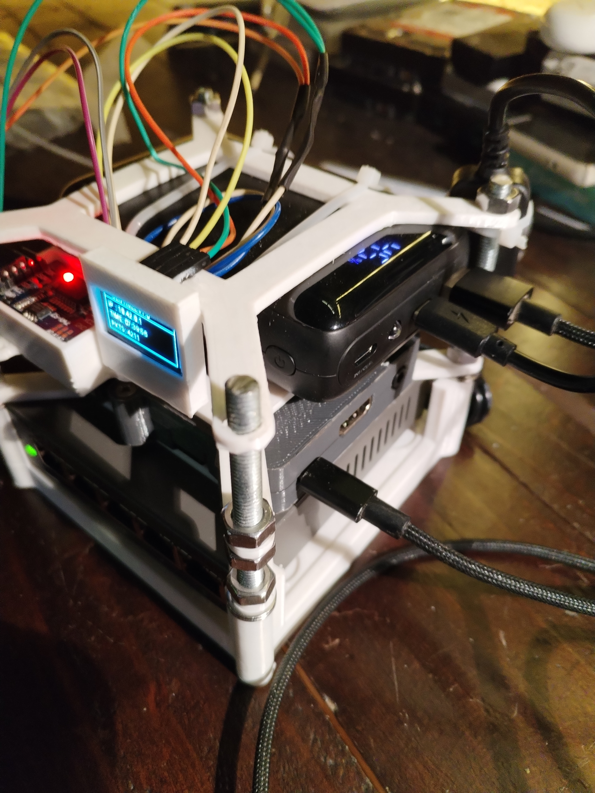
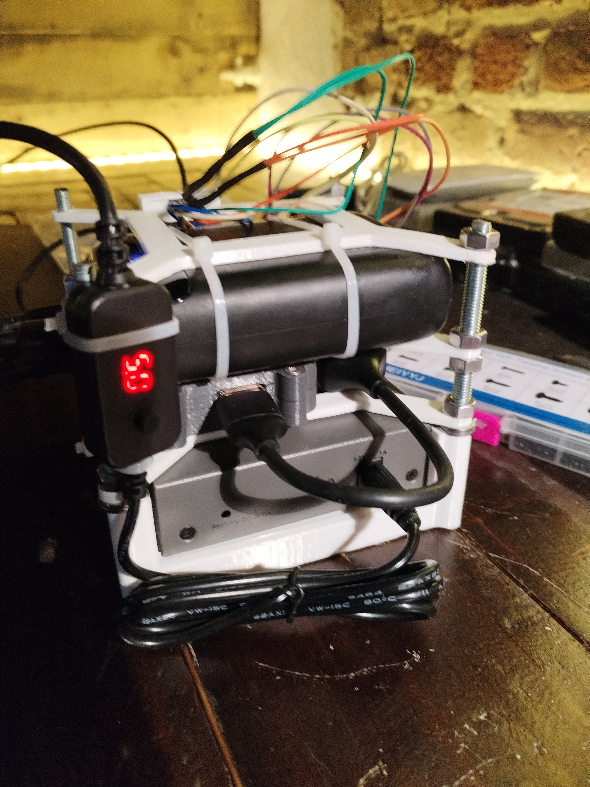
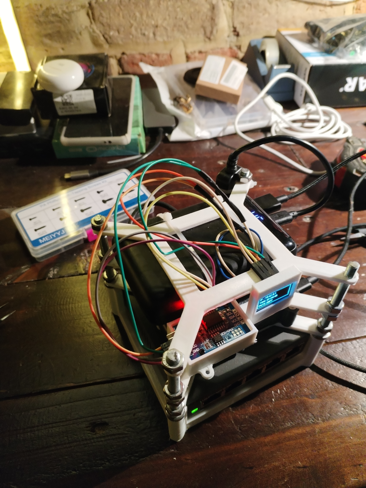

Concept du Projet & Comparaison avec les Configurations Standards
Lors des audits physiques et des missions de Red Teaming, l'accès physique est parfois la seule porte d'entrée viable. Les audits standard nécessitent généralement le déploiement d'un ordinateur portable encombrant sous Kali Linux (très visible) ou l'utilisation d'appliances personnalisées coûteuses manquant de flexibilité pour la redirection en coupure (inline).
Le Projet Sentinel v2.0 est une sonde autonome intégrée (« Drop Box »). Elle est conçue pour être déployée physiquement derrière une station de travail ou un téléphone VoIP afin de mener une surveillance réseau furtive ou un scan actif :
- Interception furtive en coupure : Fonctionne de manière inline entre le périphérique cible et le routeur, dupliquant le trafic de manière transparente sans générer d'alertes de changement d'état de lien.
- Double profil réseau : Fonctionne entièrement hors bande (out-of-band), offrant un point d'accès Wi-Fi masqué pour le pilotage par l'auditeur, tandis que l'interface physique d'écoute est isolée sur le réseau cible.
- Logique autonome multimode : Bascule entre l'écoute passive (sniffing) et la corrélation active de vulnérabilités, de manière automatique ou via des commandes de contrôle.


Adaptations Matérielles : Dompter le Raspberry Pi 3A+
L'exploitation d'une drop box physique sur le terrain impose des contraintes strictes en termes de consommation électrique, de conflits matériels et de synchronisation temporelle hors-ligne. Les solutions personnalisées suivantes ont été développées :
> 1. Consommation Électrique : Le Choix Stratégique du Pi 3A+
Un Raspberry Pi 3B+ standard consomme environ 500mA à plus de 1,2A en charge en raison de son hub USB et de son contrôleur Ethernet intégrés. Pour maximiser la durée de vie de la batterie, le Raspberry Pi 3A+ a été sélectionné. Dépourvu de ces puces énergivores, il réduit la consommation électrique de moitié (200 à 300mA sous charge), étendant grandement l'autonomie sur le terrain.

> 2. Interception en Coupure (Switch Netgear & Câble Convertisseur Step-Up)
Pour analyser les paquets réseau sans interrompre le trafic du périphérique cible, la sonde utilise un switch administrable Netgear configuré en Port Mirroring (SPAN). Pour alimenter à la fois le Pi (5V) et le switch (12V) avec une seule batterie USB 5V standard, un câble convertisseur de tension Step-Up a été conçu, permettant un déploiement compact.
> 3. Horodatage Forensics (Module RTC DS3231)
La drop box fonctionnant hors-ligne sur des réseaux cibles isolés, elle ne peut pas synchroniser son heure via NTP. Au démarrage, l'heure système retombe par défaut à l'epoch Unix, corrompant l'horodatage des fichiers PCAP. Pour y remédier, un module matériel RTC DS3231 a été connecté au bus I2C (0x68), garantissant des dates de captures précises pour l'analyse forensics.
> 4. Partage de Bus de l'Interface Tactique (Écran OLED & RTC)
Pour vérifier l'adresse IP et l'état de la sonde sans connecter d'ordinateur, un écran OLED 0,96" a été ajouté. Afin d'éviter la saturation des broches GPIO, l'écran et le module RTC partagent le même bus I2C physique. Le noyau Linux (/boot/config.txt) a été configuré pour gérer simultanément les adresses 0x3C et 0x68.
Architecture Logicielle et Fonctionnalités Clés
> 1. Isolation de la Pile Réseau Out-of-Band
Pour garantir la furtivité, l'adaptateur USB-Ethernet connecté au réseau cible (eth0) est isolé. Les requêtes DHCP standard sont désactivées et le service wpa_supplicant de Debian est masqué. L'accès d'administration s'effectue hors bande en transformant l'interface Wi-Fi interne (wlan0) en point d'accès masqué piloté par hostapd et dnsmasq.
> 2. Orchestration de Sécurité Multimode (switch.sh)
Le comportement de la sonde est régi par un script d'orchestration en Bash (switch.sh) qui gère les règles iptables, l'état des interfaces réseau et les démons de capture. Il permet de basculer dynamiquement entre l'écoute passive, le scan actif et l'enrichissement de vulnérabilités.
> 3. Capture Furtive Économe en Mémoire & Protection du Stockage
L'écoute passive (Mode 1) est gérée par un démon Python s'appuyant sur Scapy. Le Pi 3A+ étant limité à 512 Mo de RAM, le script écrit les paquets en temps réel sur la carte SD (via le paramètre store=0 de Scapy) pour éviter le gel du système. Un thread parallèle surveille l'espace disque, coupant la capture à 90 % d'utilisation pour préserver le système de fichiers.
Référence des Commandes CLI
L'orchestrateur se pilote par ligne de commande depuis la session SSH d'administration :
switch.sh --mode passive — Active le mode promiscuité sur eth0 et démarre le démon de capture Scapy.
switch.sh --mode active — Sort de la furtivité, lance des balayages ARP/ICMP et des scans de ports SYN.
switch.sh --mode enrich — Analyse les résultats hors-ligne, interroge l'API du NIST et corrèle les CVE.
switch.sh --status — Affiche l'état de la batterie, la température CPU et l'état de la liaison cible.